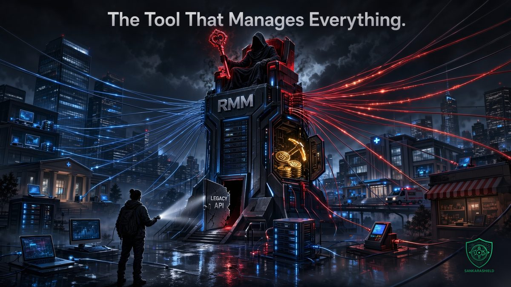

The tool that manages everything: N-able N-central zero-days exploited hours after public exploits.

Proof-of-concept exploits for N-able N-central went public on 12 November 2026. Within hours, attackers were using them to install cryptocurrency miners on production servers. Today the payload is a miner. The access behind it is the kind that ransomware crews pay for.
N-central is N-able's remote monitoring and management (RMM) platform. Managed service providers (MSPs) and internal IT teams use it to patch, script, monitor and control thousands of client devices from one console. That reach is what makes it valuable to its users, and exactly what makes it valuable to attackers.
This brief explains what was disclosed, what has been seen in the wild, and what N-central operators, MSP clients and every security team should do now.
WHAT WAS DISCLOSED
THE RESEARCHER — security researcher Sean Bales published proof-of-concept exploits for two attack chains on 12 November. He says he tested them against N-central Appliance 2026.4.1.26 HF2, released by N-able on 10 November.
4EVERABLE2SHELL — lets an unauthenticated attacker run commands as root on an N-central server, but only if the Legacy API is enabled. It chains an Apache Axis vulnerability (CVE-2026-90436) with a separate N-central privilege escalation weakness.
AGENT2SHELL — targets the N-central agent and is claimed to allow SYSTEM-level commands on managed Windows devices. That is the scenario every RMM customer fears: one console compromise turning into code execution across the fleet.
THE CONTEXT — earlier the same week, Bales had published more than 30 alleged zero-day vulnerabilities in N-central. N-able took its hosted N-central environments offline and urged on-premises customers to shut down their servers. Bales has also criticized N-able's handling of disclosures. Those claims come from the researcher and have not been independently verified.
WHAT HAS BEEN SEEN IN THE WILD
FIRST PROBES — Previdian, which tracks the privilege escalation flaw as VULN-2026-0009, saw probing from a single IP address at about 08:30 UTC on 12 November, followed by attempts to run the full chain against its honeypot. The escalation abuses a privileged helper called setLDFileOwner and a symbolic link to make a root-owned script writable. The payload downloads a shell script from 157.20.241[.]16.
REAL VICTIMS — Huntback reports at least 21 compromised production N-central servers. The full chain started at 09:16 UTC. The payload installed an XMRig Monero miner set to use about half of the CPU cores, apparently to stay under the radar. Huntback counted 21 active miners at 12:50 UTC, identified by mining pool worker IDs beginning with "nc_".
WHERE — victims were in the United States, Canada, South Africa, the United Kingdom, Germany, France and Sweden. Nineteen of them ran version 2026.4.1.26.
N-ABLE'S RESPONSE
N-able's advisory said it had seen no signs of compromise from the new flaws. Researchers have since reported successful exploitation. The vendor is restricting some N-central features and integrations, and disabled its Microsoft Intune integration as a precaution. It says these measures "may affect some functionality."
For on-premises customers, N-able says to confirm that Legacy API access is disabled, which it describes as the default. Hosted environments already have these protections. Customers should keep upgrading Agents and Probes under the Hotfix 2 guidance. At the time of writing, no permanent fix had been described.
WHY RMM COMPROMISE IS DIFFERENT
AN RMM SERVER IS TIER ZERO — it can push software, run scripts and change settings on every device it manages, usually with SYSTEM or root rights. Whoever controls it controls the fleet.
ONE BREACH, MANY VICTIMS — for an MSP, one N-central server can manage dozens of client companies. A single compromise becomes a supply chain incident.
WE HAVE SEEN THIS BEFORE — in July 2021, attackers abused Kaseya VSA, another RMM platform, to push REvil ransomware through MSPs to downstream businesses. The method was the same: use the trusted management channel to deliver the payload.
A MINER IS A WARNING, NOT A RELIEF — cryptojacking is often the first, noisy monetization of a new exploit. The same access can be sold to ransomware affiliates or reused quietly once the miners are cleaned up.
IF YOU RUN N-CENTRAL ON PREMISES
CHECK THE LEGACY API — confirm Legacy API access is disabled. It is the default, but verify that nobody ever turned it on for an old integration.
HUNT FOR INDICATORS — look for requests to /dms/services/ServerUI that reference jline.internal.TerminalLineSettings, an unexpected xvd.service systemd service, files under /tmp/.xvd or /var/tmp/.xvd, outbound connections to mining pools or to 157.20.241[.]16, and sustained CPU usage around half of the available cores.
TREAT ANY HIT AS A FULL ROOT COMPROMISE — isolate the server, preserve evidence, rebuild from a known-good state, and rotate every credential the server held: domain accounts, API keys, integration tokens, and the credentials it uses to reach managed devices.
REVIEW WHAT RAN ON YOUR FLEET — check the N-central audit logs for scripts, software deployments or policy changes you did not schedule since 12 November.
KEEP PATCHING AGENTS AND PROBES — follow N-able's Hotfix 2 guidance and watch for the permanent fix.
IF YOU ARE AN MSP CLIENT
You may not run N-central yourself, but your provider may run it against your network. Ask three questions today:
- Do you use N-central, and is its interface exposed to the internet? - Have you checked your servers for these indicators, and what did you find? - What can your RMM do on our network, which accounts can use it, and how would you tell us if it were compromised?
Then review your contract: incident notification timelines, the right to audit, and what access the provider holds that you could revoke in an emergency.
THE BROADER LESSONS
NEVER EXPOSE MANAGEMENT INTERFACES — RMM consoles, firewall management and hypervisor panels belong behind a VPN or zero trust access, with source IP allowlists and phishing-resistant MFA.
SEGMENT AND MONITOR LIKE A DOMAIN CONTROLLER — place the RMM server in a dedicated management segment, restrict east-west traffic, and send its logs to a SIEM with alerts on new services, new scripts and unusual logins.
WATCH OUTBOUND TRAFFIC — a miner has to reach a mining pool and a stager has to call home. Egress filtering on management servers, with an explicit allowlist, turns a silent compromise into a blocked connection and an alert.
DISABLE WHAT YOU DO NOT USE — legacy APIs and old integrations are attack surface. Every feature you do not need is one less chain an attacker can build.
WHAT TO READ WITH CARE
This brief is based on BleepingComputer's reporting of 12 November 2026, which cites N-able's advisory and research by Previdian and Huntback. The figure of at least 21 compromised servers comes from Huntback's analysis of mining pool identifiers and has not been independently verified. The researcher's claims about more than 30 zero-days and earlier unpatched flaws are his own. The situation is evolving, so check N-able's official advisory before acting.
THE BOTTOM LINE
Your RMM is the most trusted tool on your network. That is exactly why attackers want it. Treat it as tier zero: hidden from the internet, segmented, monitored, and stripped of every feature you do not use.
Who in your organization can push a script to every machine at once, and how fast would you know if it were not them?